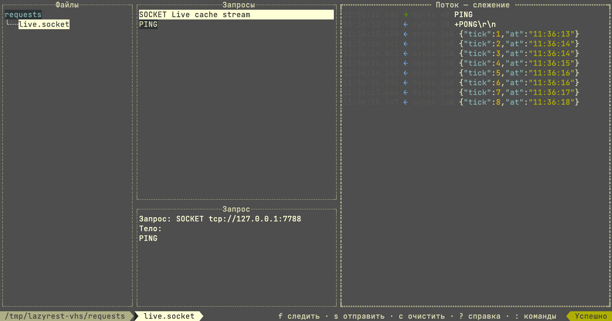

Find requests instantly
Recursive discovery for .http, .hurl and .socket files, with automatic refresh whenever your editor saves a change.
Run the request files in your project, then stay on the connection — a WebSocket, an MQTT topic, a raw socket — and watch it answer, frame by frame. No heavy client. No context switch. Just a focused, keyboard-first flow.
{
"status": "ready",
"requests": 12
}
BUILT FOR FLOW
lazyrest keeps the useful parts of an API client and leaves the ceremony behind.
Recursive discovery for .http, .hurl and .socket files, with automatic refresh whenever your editor saves a change.
Execute, cancel, replay, and move on. Hurl workflows surface their assertion failures in the TUI, and a WebSocket, MQTT or raw socket request opens a connection that stays there, frame by frame.
Pretty or raw bodies, headers, timing, accurate response sizes, history, and safe secret redaction.
A SHORTER LOOP
Stay close to your code and keep your hands on the keyboard. A request answers once and is done; a stream keeps answering, and the pane fills as it does.

READY TO RUN
Install with Go, point lazyrest at a project, and start exploring.
go install github.com/Hecatoncheir/lazyrest@latest